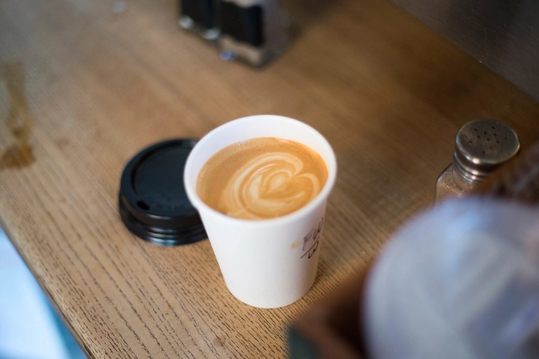

Coffee & cold drinks
Hand-roasted coffee
Bristot coffee made with care — lattes, flat whites, americanos, plus iced coffees and cold drinks for sunny days on the dunes.

Simple, tasty, quality food by the sea. Homemade scones and cakes, toasties and salads, and hand-roasted Bristot coffee — sit in, sit outside, or grab it from the hatch.
Right in the village, facing the sea, The Little Cottage Cafe is a cosy stop for locals, walkers and day-trippers alike.
In a hurry, or heading for the dunes? Our takeaway hatch serves coffee, cold drinks and treats to go.
Call to order ahead| Monday – Sunday | 10:00 – 16:00 |
| Takeaway hatch | Open daily |
Hours can change with the seasons and holidays — please check our Facebook page or give us a ring before travelling.
The Little Cottage Cafe
R291, Rosses Upper
Rosses Point, Co. Sligo, Ireland
On the S2 bus route from Sligo town.
Get directionsQuestions about today's bakes, gluten-free options or ordering ahead? Give us a call or drop us an email.